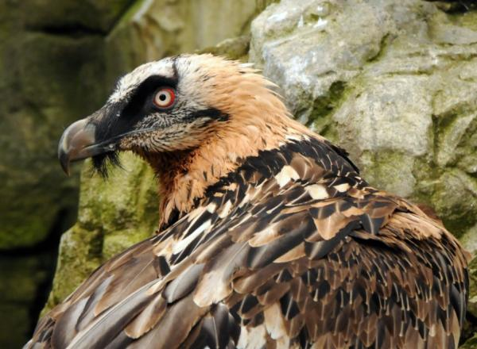

Buitres del Viejo Mundo
Pertenecen a la familia de los accipítridos y se encuentran en África, Asia y Europa. Son aves rapaces que suelen alimentarse especialmente de animales muertos aunque excepcionalmente son capaces de cazar presas vivas si estos faltan.
Una característica particular de muchos de estos buitres es una cabeza semi-calva, a veces sin plumas o con muy pocas. Históricamente, se pensaba que esto era debido a sus hábitos de alimentación, ya que las plumas se pueden pegar con la carne y la sangre en descomposición. Sin embargo, estudios más recientes han demostrado que en realidad es una adaptación de termorregulación, para evitar el sobrecalentamiento de la cara; la presencia o ausencia de plumas complejas parece importar poco en los hábitos de alimentación, ya que algunos buitres son bastante raptores.

Los buitres del viejo mundo encuentran sus cadáveres exclusivamente por la vista.
El envenenamiento por diclofenac ha causado que la población de buitres en la India y Pakistán disminuyera hasta en un 95% en la última década, y dos o tres de las especies de buitres en Asia del Sur están a punto de la extinción. Esto ha sido causado por la práctica de medicar a los animales de granja con diclofenaco, un medicamento antiinflamatorio no esteroideo (AINE), con acción antiinflamatoria y analgésica.
La disminución de buitres ha llevado a problemas de higiene en la India, como cadáveres de animales muertos que ahora tienden a pudrirse o ser comido por las ratas o los perros salvajes, en lugar de por los buitres. La rabia entre estos otros carroñeros es una importante amenaza para la salud. La India tiene una de las incidencias de rabia más altas del mundo.
Los egipcios consideraban el buitre como una excelente madre, y su gran envergadura fue vista como que todo lo abarca y le proporcionaba una cubierta protectora a sus bebés. El buitre egipcio blanco fue el animal elegido para representar a Nekhbet, la diosa madre y patrona protectora del sur, el Alto Egipto.
Páginas sugeridas:
Azor
Águila
Gavilán